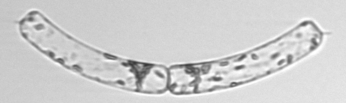
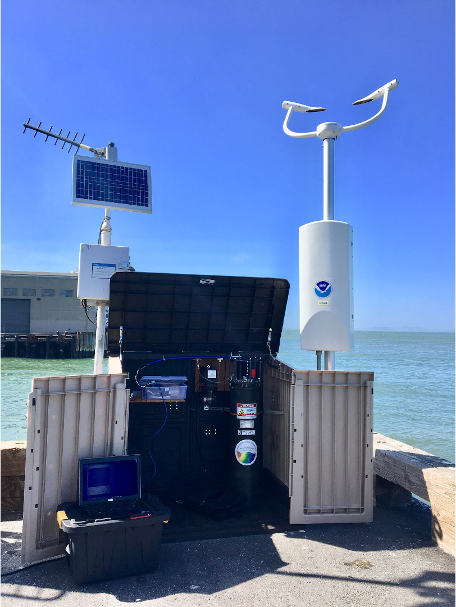
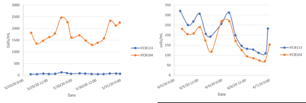
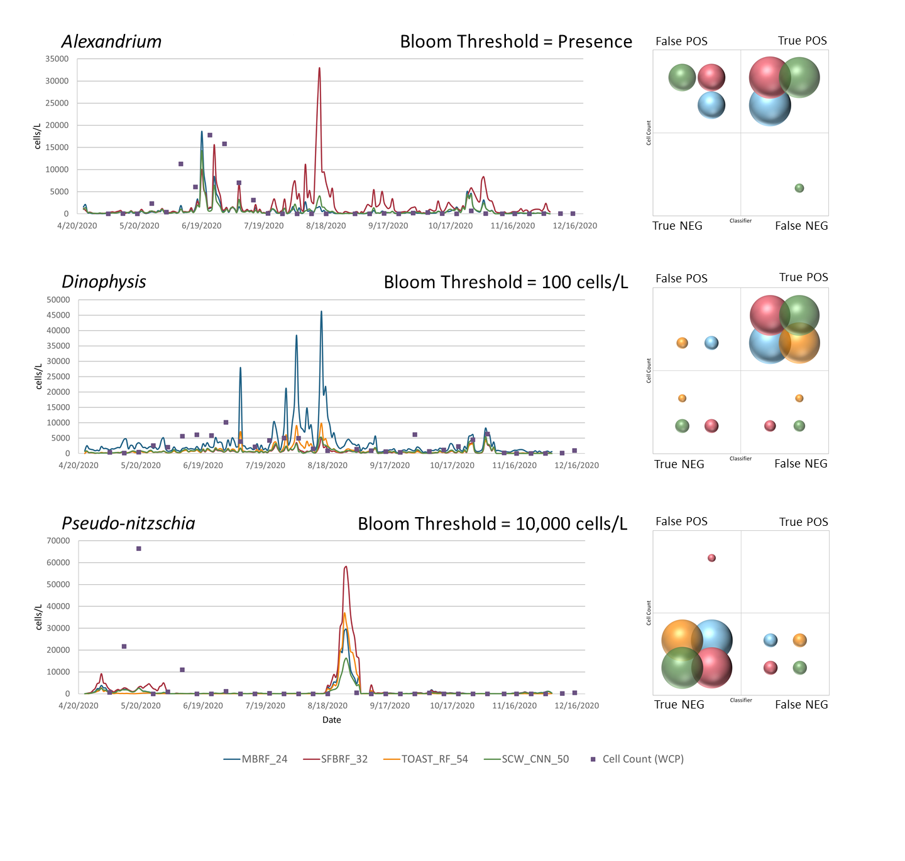

AI × 生態研究 · IFCB 海水顯微攝影
海水裡的細胞，
怎麼被看見？
從真實顯微影像，看取樣、觸發拍照與分類如何接起來。
閱讀完整文字
海水裡，藏著什麼？
顯微照片裡，海水中的微小生物有各種形狀。有些呈現一個主要輪廓，有些連成一條鏈。研究者想知道：哪些浮游植物類群正在變多？
這些原始影像來自 Santa Cruz Wharf 同一筆 2020 年樣本。照片依原比例放大；尚無這筆影像的獨立微米校準，因此不另加比例尺。
把海水送進會拍照的儀器
這篇加州研究把 IFCB 放在碼頭上，用管線送入海水。顆粒通過雷射，感測器收到螢光或散射訊號後，觸發下游的閃光與相機，留下顯微照片。
剖面將機制放大、放慢，零件位置與尺度是示意。感測雷射與拍照照明分開；取得照片後，才交給影像分類器。
先向人學，再比較候選
研究者先辨認當地影像，提供模型學習的例子。這張圖的公開資料中，Guin_Dact 的分數是 0.8354，Eucampia 是 0.1628；前者是分數較高的候選。
這是官方已保存的分類輸出，模型版本尚未核實。分數不是準確率；本片沒有重新推論，也沒有把來源候選當成人工確認的物種。
分對類，還要把細胞數對
一條鏈可能包含多個細胞，卻只留下一張照片。後面的獨立圖解用四個細胞示範：若只算照片張數，就會少算細胞。
四個細胞是教學設定，不是前面原圖的人工計數。實際濃度還要連同分析水量計算，不能把每條鏈固定乘二或乘四。
同一片海水，儀器也要調好
研究者曾把兩台 IFCB 放在同一碼頭比較。最初光學感測設定相同，估出的濃度卻相差很多；調整感測設定後，兩台儀器的紀錄才較接近。
這是作者的 Figure 1。左右圖是不同日期，縱軸刻度也不同；不能讀成同一批資料被修正。並列部署為四週，後面的分類器比較則涵蓋八個月。
讓影像紀錄接受外部核對
作者把 Pseudo-nitzschia 的影像分類估計，與每週水樣的計數放在同一張時間圖。彩線反映不同分類器，紫色方點則來自另外採集的水樣。
圖上的單位是 cells/L。水樣探針針對部分物種，與影像類群範圍未必完全相同；成鏈影像可能低估細胞數。這是作者原圖，沒有重算或補造資料點。
知道何時該再仔細看看
自動攝影和分類能持續留下海水中小生命的變化，幫研究者找到值得關注的時段。後續仍要核對影像、採樣與檢驗，才能回答更進一步的問題。
辨認到潛在有害類群，不等於已量到毒素。本研究指出計數限制，沒有提供一套已把所有細胞鏈修正完成的方法。
原始影像與研究圖
這裡保留完整原檔。顯微影像與來源分類列可相互核對；儀器功能圖、四細胞計數圖則是另外製作的教學示意。
一個主要輪廓
2020-07-01 Santa Cruz Wharf，IFCB104，同一筆樣本的 ROI 00120。來源最高候選為 Akashiwo，分數 0.954；這是官方保存的輸出，並非人工物種鑑定。本片保留原 PNG，不加未核對的比例尺。

一張成鏈的影像
同一筆樣本的 ROI 00298。來源候選為 Guin_Dact 0.8354、Eucampia 0.1628；保留來源縮寫，沒有把它稱為 Pseudo-nitzschia。後面的四細胞圖為獨立教學示意，不是此圖的計數或分割結果。

Santa Cruz Wharf 的部署環境
SCCOOS 官方網絡頁的部署照片。圖說可追溯至 Santa Cruz Wharf；拍攝者與日期未明示，不將它當作這筆 2020 樣本的同期照片。

Figure 1：兩台儀器的比較
McGaraghan 等（2022），CC BY 4.0。左圖是初期相同 PMT 設定，右圖是調整 IFCB113 之後；不同日期、不同縱軸刻度，單位 cells/mL。保留原圖，沒有把左右數據互相轉換。

Figure 3：分類器與外部水樣
McGaraghan 等（2022），CC BY 4.0。動畫聚焦底部 Pseudo-nitzschia 時間圖，這裡保留完整原圖。彩線為不同分類器，紫方點為外部採樣資料，單位 cells/L；外部檢驗針對的物種範圍未必與影像類群相同。